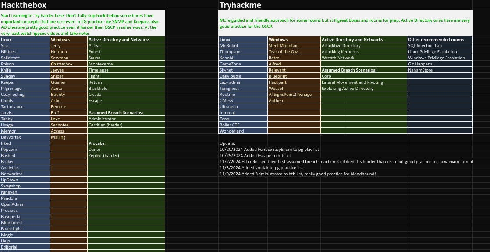
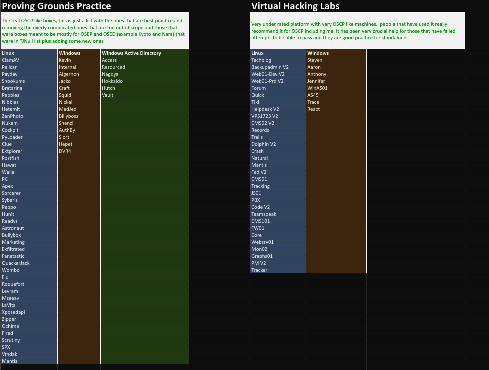
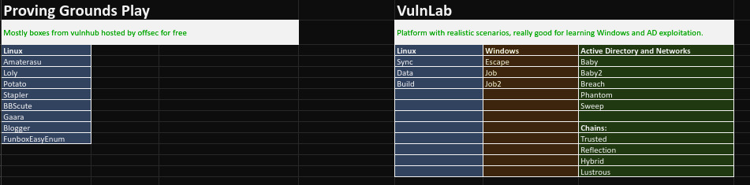

some OSCP considerations
some reminders and faqs regarding the pen-200 and OSCP exam (updated in Apr 2024).
how is the pen-200 course organized?
after subscribing to the course, you have to wait for a minimum of 10 days before studying pen-200. the course is organized as it follows:
- topic exercises to learn what you need
- lab machines to practice and hone your skills, accessible for a limited time
- 850-page pdf course guide
- 17+ hours of video
as a side note, it took me roughly 87h to finish the entire OSCP course (in 2022).
what are the exam rules?
you got 23 hours and 45 minutes to finish the exam, which is structured as follows:
- 3 independent targets to hack, each one of them granting 20 points: 10 points for low-privilege access + 10 points for privilege escalation = 60 points in total. none of the targets contains a buffer overflow attack vector anymore.
- ad challenge comprised of 1 domain controller with 2 clients, granting 40 points for a full exploit chain of the domain. no partial points can be granted for this one.
you need at least 70 points to pass the exam, the maximum being 100 points. each proof of exploitation in any target is a file that is either named local.txt or proof.txt, that has to be retrieved, submitted in your control panel, and included in a screenshot with your documentation.
proof.txtis only accessible to root/Administrator and can be found under the/rootdirectory or theAdministrator desktop.local.txtis accessible to an unprivileged user account.
just use cat or type to get the hash and submit it, but note that you won't get a confirmation whether or not the hash is correct in the exam control panel. in your screenshots, the proofs must be shown with those commands immediately followed by either ipconfig, ifconfig, or ip addr outputs:
- failure to provide the proof files in a screenshot for any machine will result in zero points being awarded.
- obtaining the proof files in any other way (web shells included) will result in zero points too.
the entire exam is proctored, more info here.
keep in mind that the following tools and methods are disallowed:
- spoofing (IP, ARP, DNS, NBNS, etc)
- commercial tools or services (metasploit pro, burp pro, etc.)
- automatic exploitation tools (e.g. db_autopwn, browser_autopwn, sqlmap, sqlninja etc.)
- mass vulnerability scanners (e.g. nessus, nexpose, openvas, canvas, core impact, saint, etc.)
- AI chatbots (e.g. chatGPT, youchat, etc.)
- features in other tools that utilize either forbidden or restricted exam limitations
you can only use metasploit modules (auxiliary, exploit and post) or the meterpreter payload against one single target of your choice. it may be simpler to not use them at all, and substitute meterpreter with rlwrap for instance.
if you do use it, it is locked on a single target of your choosing, and must not be used for pivoting either.
you can however use msfvenom and exploit/multi/handler everywhere.
keep in mind that you must not download any applications, files or source code from the target unless it is strictly necessary to compromise it. if you have to, delete everything after completing the exam objectives.
take extensive notes while hacking the targets. after your VPN connection expires and the exam ends, you have another 24 hours to write and submit your report.
your report must be thorough: a technically competent reader should be able to replicate your entire attacks step-by-step just by following the instructions. failure to provide sufficient documentation will result in either reduced or zero points.
if you use an exploit without any modifications, just provide the URL where the exploit can be found.
if you use a modified exploit, you must include:
- the modified exploit code
- the URL to the original exploit
- the command used to generate any shellcode (with
msfvenomfor instance) - highlighting of all changes made in the code
- explanation of why the changes were made
you can use your own template as long as it is well structured, professional, and follow all requirements, but templates are also already provided:
your report must be in the PDF format and follow this checklist:
- your PDF file will be the only file submitted and must contain everything, including all your scripts and all POCs as text
- your PDF file name must be
OSCP-OS-XXXXX-Exam-Report.pdf, whereOS-XXXXXis your osid when you registered - your PDF must be archived in a
.7zfile, without any password, by using the command7z a <your_archive>.7z <your_report>.pdf - your
.7zarchive file name must beOSCP-OS-XXXXX-Exam-Report.7z, whereOS-XXXXXis your osid - your archive file size must not be higher than 200MB
- your archive must be uploaded to https://upload.offsec.com
failure to follow any of these steps will either lead to the application not accepting the report or the report not being scored.
after uploading your archive, the site will provide you a MD5 hash that you can compare with your local archive to make sure that integrity has been maintained. if they don't match, reupload your archive.
a confirmation email will be sent once the report is uploaded successfully. you'll know if you passed the exam or not roughly 2 weeks later.
how can you get bonus points before the exam? is it worth it?
you can get 10 bonus points before the exam by getting at least 80% of the correct solutions for topic exercises in every topic, and 30 correct proof.txt hashes from the offsec platform.
now, is it worth it? here are possible scenarios to pass the exam:
- 40 pts AD + 3 local.txt flags
- 40 pts AD + 2 local.txt flags + 1 proof.txt flag
- 40 pts AD + 2 local.txt flags + bonus points
- 40 pts AD + 1 proof.txt + 1 local.txt + bonus points
- 3 fully completed non-AD machines + bonus points
bonus points can be valuable and even allow you to fully avoid the AD challenge. but putting all your eggs in one basket can be dangerous if you end up struggling with any of the independent targets. your choice, your risks.
how many times can you retake the exam?
as many times as you need as long as you have the money for retakes, but a cooling off period must be followed:
- after a first failed exam, you must wait 6 weeks before rescheduling a retake
- after a second failed exam, you must wait 8 weeks before rescheduling a retake
- after a third failed exam onward, you must wait 12 weeks before rescheduling a retake
those cooling off periods apply only for the pen-200 individual course ($1499).
are there other training resources worth doing?
plenty of them: tryhackme, hackthebox are pretty good resources, as well as proving grounds which is also provided by offensive security for a monthly fee ($19/Mo).
for HTB boxes, it is highly recommended to follow TJ Null's lists as the machines listed there are a close match to those encountered in the exam.
You can also find a recently updated list from LainKusanagi. For convenience, here are the recommended boxes on several platforms:



which tools are recommended beyond the usual ones?
- autorecon, for fast enumeration of all exam machines
- chisel, for pivoting and port forwarding
- pspy, to spy on running processes in linux
- SUID3num, to exploit Linux with gtfobins
- LFIsuite, to automatically detect lfi vulns